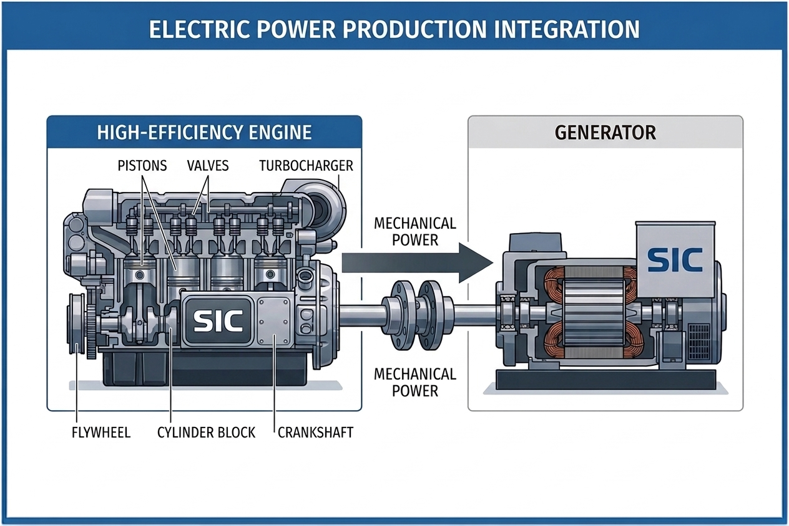

Engine architecture
A new approach to the transfer of power from the piston to the crankshaft.
ENERGY & PROPULSION ENGINEERING
EnerSich develops combustion engine and generator technology designed to increase power density and reduce fuel use in compact power systems.

Integrated power generation concept ↗
01 / TECHNOLOGY
The EnerSich project combines a redesigned piston engine with generator development. Its ambition is a smaller, lighter source of mechanical and electrical power for demanding applications.
The engine work focuses on the piston, connecting rod and crankshaft mechanism, with the aim of improving specific power and fuel consumption. The generator work examines how to convert that mechanical output into electricity efficiently.
A new approach to the transfer of power from the piston to the crankshaft.
Higher power density can reduce the size and weight needed for a given output.
Engine and generator development aimed at practical electricity production.
02 / TESTED ENGINE
A 240 cc Sič motor prototype was tested by the Faculty of Agriculture at the University of Novi Sad in 2009. The figures below come from that report and apply to that tested motor and its stated reference engine.
Energy characteristics, fuel consumption and exhaust measurements of the Sič Motor 240 CC. Novi Sad, August 2009.
03 / APPLICATIONS
The development programme explores uses for compact engines and integrated power generation across several sectors.
Compact generator sets for industrial and remote electricity needs.
Potential electricity generation using biogas and natural gas as fuel sources.
Engine and generator integration where space, mass and operating costs matter.
Exploration of power generation as a component in hydrogen and e-fuel production.
04 / MEDIA
Explore the supplied footage, prototype photographs and system concepts. Select a video to play it here, or open an image for a closer look.
EnerSich video 01
EnerSich video 02
EnerSich video 03
05 / THE OPPORTUNITY
The team is seeking conversations with investors, licensing partners and industrial collaborators to develop and commercialise the technology.
The investment prospectus outlines a proposed 150 kW system and an initial production programme of 1,000 units. Those are development and commercialisation objectives, distinct from the 240 cc motor measurements shown above.
Start a conversation06 / CONTACT
Have a question about the technology or an idea for a partnership? Send the team a message or reach out directly.
Igmanska 14, Subotica, Serbia
Žarka Zrenjanina 12/3, Subotica, Serbia